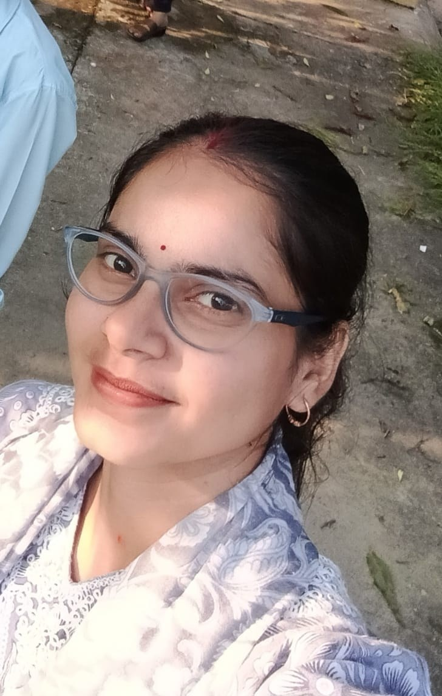

CURRENT TRAINING
CITS — CSA Trade
Currently pursuing
HELLO, I’M
Aspiring Government Instructor with a foundation in computer science, practical IT training and a passion for helping others build digital skills.
⌖ Kanpur, Uttar Pradesh, India

01 / ABOUT ME
I’m Ankita Tiwari, a Computer Science and Engineering professional currently pursuing CITS training in the CSA trade. My career goal is to become a Government Instructor and support learners through quality vocational education.
My academic background includes a three-year Diploma in Computer Science & Engineering, a B.Sc. degree and completed postgraduate studies. I’m building my technical foundation across programming, web technologies, databases and everyday computer applications, while strengthening communication, teamwork and problem-solving skills.
02 / ACADEMIC JOURNEY
A continuous journey of learning and skill development.
CURRENT TRAINING
Currently pursuing
POSTGRADUATE
Completed
GRADUATION
70%
DIPLOMA
Three-year diploma
INTERMEDIATE · 12TH
70%
HIGH SCHOOL · 10TH
70%
03 / WHAT I WORK WITH
A growing toolkit for computer science and vocational learning.
04 / CURRENT FOCUS
I am currently pursuing Crafts Instructor Training Scheme (CITS) in the CSA trade. This training is part of my preparation for a career in vocational instruction.
05 / LET’S CONNECT
I’m open to connecting about learning, vocational training and opportunities related to computer education.